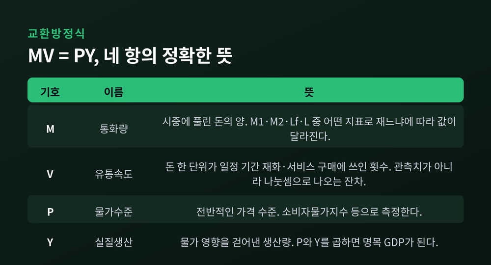
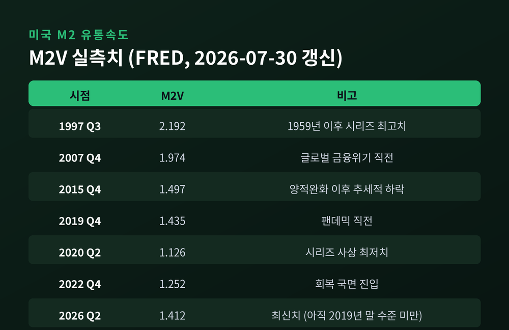
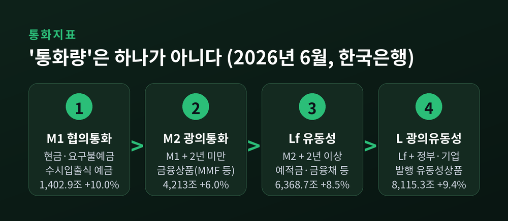
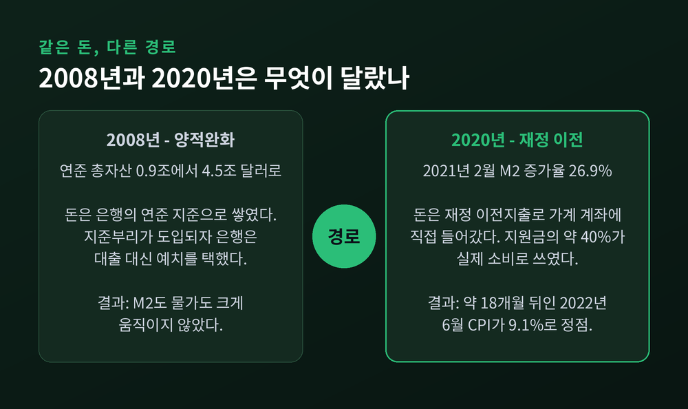
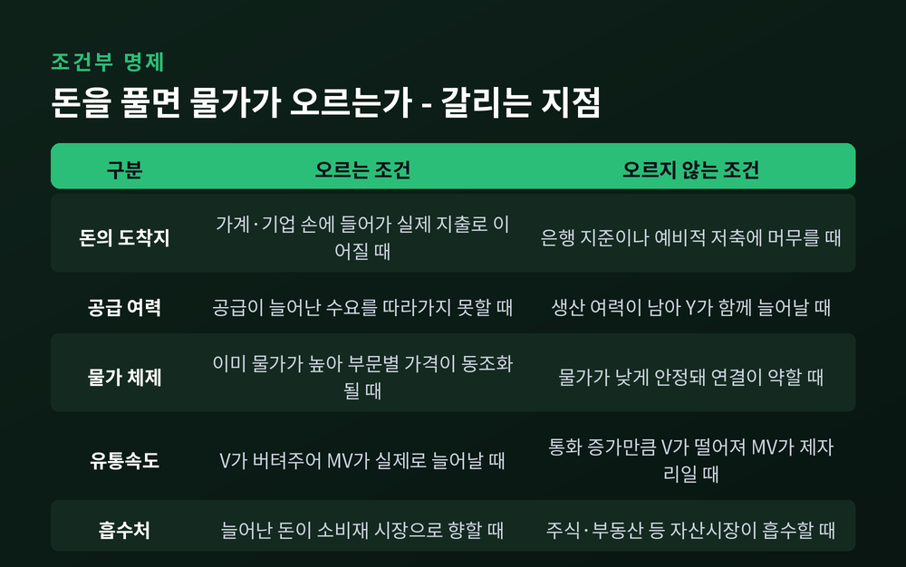
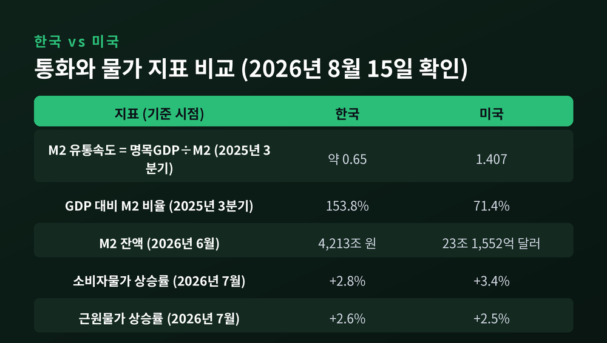

이번 글에서는 화폐 유통속도와 통화량의 관계를 정리해 보겠습니다. 돈을 풀면 물가가 오른다는 명제가 언제 맞고 언제 빗나가는지, 실제 숫자를 놓고 따져보려 합니다. 미국과 한국의 최신 지표는 2026년 8월 중순 기준으로 확인한 값을 씁니다.
교환방정식은 MV = PY로 씁니다.
M은 통화량, V는 화폐 유통속도, P는 물가수준, Y는 실질생산입니다. P와 Y를 곱하면 명목 GDP가 됩니다.
읽는 방법은 간단합니다. 왼쪽은 "얼마의 돈이 몇 번 돌았나"이고, 오른쪽은 "그 결과 얼마어치가 팔렸나"입니다. 지출 총액과 판매 총액은 같을 수밖에 없습니다.
그래서 이 식은 이론이 아니라 항등식입니다. 언제나 참입니다.
바로 여기에 함정이 있습니다. M이 늘었을 때 P가 오를지, Y가 늘어날지, 아니면 V가 떨어져 아무 일도 일어나지 않을지 — 방정식만으로는 결정되지 않습니다.
돈을 풀면 물가가 오른다는 결론이 나오려면 조건이 더 필요합니다. V가 안정적이고, Y가 단기에 크게 변하지 않는다는 가정입니다. 화폐수량설은 그 가정 위에 서 있습니다.

여기서 가장 자주 오해받는 항이 V입니다.
세인트루이스 연준이 발표하는 M2 유통속도의 정의를 보면 분명해집니다. "분기 명목 GDP를 분기 평균 M2 통화량으로 나눈 값"입니다.
즉 유통속도는 어딘가에서 관측되는 숫자가 아닙니다. 명목 GDP와 통화량이 먼저 집계되고, 그다음 나눗셈으로 나오는 잔차입니다.
의미는 있습니다. 한 단위의 돈이 일정 기간 동안 국내에서 생산된 재화와 서비스를 사는 데 몇 번 쓰였는지를 보여줍니다. 이 값이 오르면 거래가 활발해졌다는 뜻입니다.
그러나 독립 변수처럼 다루기는 어렵습니다. 통화량이 크게 늘었는데 명목 GDP가 그만큼 늘지 않으면, V는 자동으로 떨어집니다. 설명이 아니라 계산의 결과입니다.
이 점을 기억해두면 뒤의 이야기가 훨씬 선명해집니다.
숫자를 보겠습니다. 아래는 세인트루이스 연준 FRED의 M2 유통속도(M2V) 실측치입니다. 2026년 7월 30일 갱신분 기준입니다.
1997년 3분기 2.192가 1959년 이후 시리즈 최고치입니다. 그 뒤로는 내리막이었습니다.
금융위기 직전인 2007년 4분기 1.974, 양적완화가 이어진 2015년 4분기 1.497입니다. 팬데믹 직전인 2019년 4분기에는 1.435였습니다.
그리고 2020년 2분기, 1.126까지 떨어졌습니다. 시리즈 사상 최저치입니다.
한 분기 만에 1.390에서 1.126으로 내려앉았습니다. 통화량은 폭증하는데 경제활동은 멈춰 섰으니, 나눗셈의 결과가 그렇게 나온 것입니다.
회복은 느렸습니다. 2021년 2분기 1.150, 2022년 4분기 1.252, 2023년 4분기 1.369입니다. 2026년 1분기와 2분기는 나란히 1.412입니다.
6년이 지났는데 아직 2019년 말의 1.435를 되찾지 못했습니다.

돈을 얼마나 풀었느냐를 따지려면 먼저 물어야 합니다. 어떤 돈을 말씀하시는지요.
한국은행은 2002년부터 국제통화기금 기준에 따라 여러 통화지표를 함께 편제합니다.
M1은 현금과 요구불예금, 수시입출식 저축성예금입니다. 지갑과 통장에서 바로 꺼내 쓸 수 있는 돈입니다.
M2는 M1에 만기 2년 미만 금융상품을 더합니다. MMF, 2년 미만 정기예적금, 시장형 상품 등이 들어갑니다. 통상 통화량이라 부르는 것이 이 M2입니다.
Lf는 여기에 만기 2년 이상 예적금과 금융채, 보험사 예수금 등을 더한 금융기관유동성입니다. L은 정부·기업이 발행한 유동성 상품까지 포함한 가장 넓은 지표입니다.
정의가 바뀌면 숫자도 바뀝니다. 실제 사례가 있습니다.
한국은행은 2025년 말 국제통화기금 권고에 따라 M2 구성 항목에서 상장지수펀드를 포함한 주식·채권형 펀드 등 수익증권을 제외했습니다. 그 결과 2026년 6월 M2 증가율은 전년 동월 대비 6.0%입니다. 그런데 개편 전 기준으로 계산하면 12.3%입니다.
같은 달, 같은 나라, 같은 돈입니다. 정의 하나로 두 배가 갈립니다.

이제 본론입니다. 2008년 이후 미국은 전례 없는 규모로 돈을 풀었습니다. 연준 총자산은 2008년 약 9,000억 달러에서 세 차례의 양적완화를 거쳐 4조 5,000억 달러 수준까지 불어났습니다.
그런데 물가는 오르지 않았습니다.
세인트루이스 연준의 크리스토퍼 닐리는 그 이유를 한 문장으로 정리합니다. 본원통화가 급증했지만 M2나 물가의 이례적 증가로 이어지지 않았고, 이는 "은행들이 사실상 채권을 연준 예치 지준으로 교환했기 때문"이라는 것입니다.
은행이 대출을 늘려야 돈이 시중에 돕니다. 그런데 은행은 연준에 초과지준으로 쌓아두는 쪽을 택했습니다.
이유가 있습니다. 2008년부터 연준은 지급준비금에 이자를 지급하기 시작했습니다. 위험을 안고 대출하는 것보다 연준에 두는 편이 낫다면, 은행의 선택은 정해져 있습니다.
이 제도는 지금 미국 통화정책의 기본 골격이 되었습니다. 2026년 2월 발표된 연준 이사회 제인 이리그와 세인트루이스 연준 스콧 월라의 설명에 따르면, 연준은 지준부리와 익일물 역환매조건부채권 금리라는 관리금리로 연방기금금리를 유도합니다. 금융기관이 연준에 자금을 두면 이 금리를 받을 수 있으므로, 두 금리가 시장금리의 하한으로 작동합니다.
풀린 돈이 은행 금고에 머물면 V가 떨어집니다. MV는 늘지 않습니다. 물가도 움직이지 않습니다.
교과서가 틀린 것이 아니라, 교과서가 가정한 V가 그대로 있어주지 않은 것입니다.

2020년에도 돈은 풀렸습니다. 규모는 훨씬 컸습니다.
2021년 2월 미국 M2 증가율은 전년 동월 대비 26.9%였습니다. 2008~15년 양적완화기는 물론 1970~80년대 고물가기의 어떤 증가율보다도 높습니다.
차이는 규모가 아니라 경로에 있었습니다.
2008년의 돈은 은행 지준에 머물렀습니다. 2020년의 돈은 재정 이전지출을 통해 가계 계좌로 직접 들어갔습니다.
물론 그 돈이 전부 소비된 것은 아닙니다. 미국경제연구소 정리에 따르면 코로나 현금 지원 중 실제 소비로 쓰인 비중은 약 40%였고, 나머지 60%는 저축되거나 부채 상환에 쓰였습니다. 이 사실 자체가 V가 왜 그렇게 낮았는지를 설명합니다.
그럼에도 40%는 은행 금고에 갇힌 돈과 다릅니다. 그것은 실제 지출이 되었습니다.
시차가 있었습니다. M2 증가율이 치솟기 시작한 것은 2020년 2월입니다. 물가가 오르기 시작한 것은 약 1년 뒤인 2021년 2월, 마침 M2 증가율이 정점을 찍은 달입니다. 그리고 미국 소비자물가는 2022년 6월 전년 동월 대비 9.1%로 정점을 찍었습니다. 1981년 11월 이후 40년 만의 최대 상승폭이었습니다. M2 증가율 정점에서 약 18개월이 지난 시점입니다.
여기서 조심할 대목이 있습니다. 닐리 본인이 단서를 답니다. 2022년 2월 러시아의 우크라이나 침공이 원자재와 공급망을 통해 상당한 물가 압력을 만들었다는 것입니다. 실제로 2022년 6월 물가 급등은 에너지와 식료품이 주도했습니다.
통화 급증, 가계로의 직접 유입, 공급 충격. 세 가지가 겹친 결과였습니다. 하나만 떼어 설명하기는 어렵습니다.
이 질문에 가장 정교한 답을 내놓은 것이 국제결제은행의 클라우디오 보리오 연구진입니다.
결론은 이렇습니다. 통화증가율과 물가의 연결 강도는 물가 체제에 따라 달라집니다. 물가가 높을 때는 거의 1대 1이고, 물가가 낮을 때는 사실상 존재하지 않습니다.
1951년부터 2021년까지 선진국과 신흥국을 놓고 초과통화증가율, 즉 통화 증가율에서 실질 성장률을 뺀 값과 물가의 10년 평균을 비교했습니다. 전체를 합치면 1대 1 관계가 선명합니다. 그런데 고물가 구간과 저물가 구간으로 나누면, 저물가 구간에서는 관계가 사라집니다.
이유는 이렇습니다. 통화량은 인플레이션의 공통 성분과 더 밀접합니다. 물가가 낮을 때는 전체 변동에서 개별 품목의 특이 요인이 차지하는 비중이 큽니다. 반면 물가가 오르면 부문별 가격 변동이 서로 동조화되고, 그것이 일종의 조정 장치처럼 작동합니다.
팬데믹기 검증 결과도 흥미롭습니다. 2020년 초과통화증가율과 2021~22년 평균 물가 사이에는 유의한 관계가 있었고, 1대 1이라는 가설을 기각할 수 없었습니다. 초고물가국을 제외하면 계수는 0.34로 떨어지지만 여전히 유의했습니다.
그런데 창을 1년만 밀면 무너집니다. 2021년 통화증가율과 2022~23년 물가의 관계는, 초고물가국을 빼고 나면 거의 보이지 않습니다.
연구진의 마지막 문장이 정직합니다. 통화증가율은 유용한 정보를 담을 수 있으나, 그 정보를 신뢰성 있게 쓰려면 상당한 뉘앙스가 필요하고 판단이 여전히 본질적이라는 것입니다.
국제통화기금의 2023년 연구도 같은 방향입니다. 통화와 물가의 관계는 1980년대 이후 뚜렷이 약해졌다가 2020년 이후 다시 강해졌으며, 그 변동은 물가 수준 자체와 관련이 있다고 봅니다.

한국 이야기로 넘어가겠습니다.
한국은행이 2026년 8월 14일 발표한 '2026년 6월 통화 및 유동성'을 보면, M2 계절조정 평잔은 4,213조 원입니다. 전월보다 29조 4,000억 원 늘었습니다. 원계열 기준 전년 동월 대비 증가율은 6.0%로 4월 5.7%, 5월 5.8%에 이어 석 달 연속 확대됐습니다.
M1은 1,402조 9,000억 원으로 전년 동월 대비 10.0% 늘었습니다. Lf는 6,368조 7,000억 원(+8.5%), L은 8,115조 3,000억 원(+9.4%)입니다.
돈이 누구에게 갔는지도 나옵니다. 비금융기업의 M2는 한 달 새 45조 7,000억 원 늘었습니다. 반면 가계와 비영리단체는 19조 8,000억 원 줄었습니다. 반도체 호황으로 늘어난 기업 여유자금이 MMF와 정기예금으로 들어간 결과입니다.
한국은행은 여기에 단서를 답니다. 경제주체별 통화 보유액은 소득뿐 아니라 차입과 소비, 투자의 영향을 받으므로 소득분배 흐름으로 해석해서는 안 된다는 것입니다.
한국의 유통속도는 어떨까요. 한국은행은 이를 별도 지표로 정기 공표하지 않습니다. 대신 GDP 대비 M2 비율의 역수로 짐작할 수 있습니다.
한국은행이 2026년 1월 국회에 제출한 자료에 따르면, 2025년 3분기 기준 한국의 명목 GDP 대비 M2 비율은 153.8%입니다. 같은 시점 미국은 71.4%입니다.
역수를 취하면 한국의 M2 유통속도는 약 0.65, 미국은 약 1.40입니다. 미국 값은 같은 시기 FRED의 M2V 1.407과 거의 정확히 맞아떨어집니다. 서로 다른 두 자료가 서로를 검증해 줍니다.
한국의 돈은 미국의 절반 이하 속도로 돕니다.
추이도 남아 있습니다. 이 비율은 2008년 3분기 100.1%로 100%를 넘은 뒤 2015년 120%, 2019년 130%를 지나 2021년 2분기에 처음 150%를 넘었습니다. 2022년 4분기 이후로는 소폭 하락한 뒤 횡보하고 있습니다.
해석은 갈립니다. 이 비율을 원화 약세의 배경으로 지목하는 시각이 있는 반면, 한국은행은 최근 M2 증가율이 장기 평균을 소폭 웃도는 수준에 그친다고 반박합니다. 어느 한쪽으로 단정하기는 이릅니다.
물가는 어떨까요. 통계청 발표에 따르면 2026년 7월 소비자물가는 전년 동월 대비 2.8% 올랐습니다. 전월 3.2%에서 내려와 석 달 만의 2%대 복귀입니다. 식료품·에너지 제외 지수는 2.6%입니다. 한국은행 금융통화위원회는 2026년 7월 16일 기준금리를 연 2.50%에서 2.75%로 올렸습니다.
통화량은 6% 늘고 물가는 2.8% 오르고 있습니다. 두 숫자 사이의 거리가 이 글의 주제입니다.

정리해 보겠습니다.
물가가 오르는 조건
첫째, 늘어난 돈이 지출로 이어질 때입니다. 가계와 기업의 손에 직접 들어가 실제 구매로 연결되어야 합니다.
둘째, 공급이 그 수요를 따라가지 못할 때입니다. 생산 여력이 남아 있으면 Y가 늘어나 P는 덜 움직입니다.
셋째, 이미 물가가 높은 체제일 때입니다. 부문별 가격이 함께 움직이기 시작하면 통화의 영향력이 커집니다.
넷째, 유통속도가 최소한 버텨줄 때입니다. V가 통화 증가만큼 떨어지면 MV는 제자리입니다.
물가가 오르지 않는 조건
첫째, 돈이 은행 지준이나 예비적 저축에 머물 때입니다. 2008년 이후가 그랬습니다.
둘째, 물가가 낮게 안정된 체제일 때입니다. 이때 통화와 물가의 통계적 연결은 사실상 사라집니다.
셋째, 자산시장이 흡수할 때입니다. 늘어난 돈이 주식과 부동산으로 흘러가면 소비자물가지수에는 잘 잡히지 않습니다.
넷째, 통화 정의가 실제 거래와 어긋날 때입니다. 앞서 본 6.0%와 12.3%의 차이가 그 예입니다.
정리하면 이렇습니다.
"돈을 풀면 물가가 오른다"는 명제는 틀린 말이 아닙니다. 다만 조건부 명제입니다. 생략된 조건이 성립할 때만 참이 됩니다.
예전에는 통화량 발표를 보면 물가 걱정부터 앞섰습니다. 지금은 한 가지를 더 봅니다. 그 돈이 어디로 갔는지입니다. 은행 금고인지, 기업의 MMF인지, 가계의 장바구니인지에 따라 결과가 완전히 달라지기 때문입니다.
유통속도라는 지표의 한계도 인정해야 합니다. 그것은 재는 값이 아니라 나누는 값입니다. 무슨 일이 왜 일어났는지 설명해주지는 않습니다. 다만 무슨 일이 일어나지 않았는지는 정직하게 보여줍니다.
2020년 2분기의 1.126이라는 숫자가 그렇습니다. 그해 사상 최대로 풀린 돈이 곧바로 물가로 가지 않았다는 사실을, 그 한 줄이 조용히 기록하고 있습니다.
다음에 통화량 뉴스를 보실 때, 증가율 옆에 유통속도 한 칸을 나란히 놓아보시면 좋겠습니다. 숫자 하나가 더해질 뿐인데, 같은 기사가 꽤 다르게 읽힙니다.
이 글은 공개된 통계와 연구 자료를 정리한 정보성 글이며, 특정 자산에 대한 투자 권유가 아닙니다. 인용한 수치는 모두 2026년 8월 15일 기준으로 확인한 값이며, 지표는 이후 개정되거나 갱신될 수 있습니다. 투자 판단의 책임은 투자자 본인에게 있습니다.